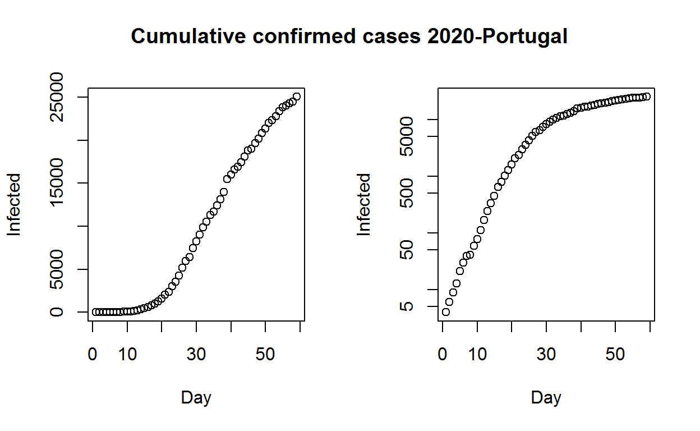
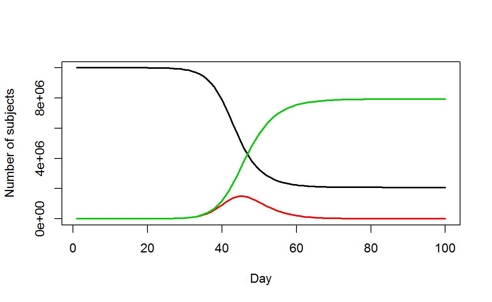
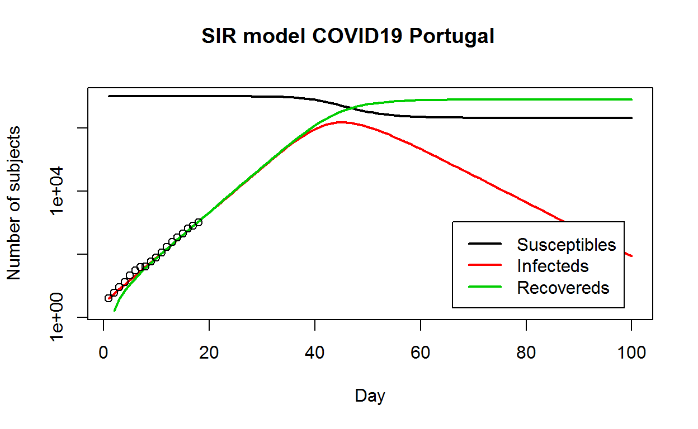

Table of Contents
Introdução
Este post foi feito para fins didacticos e pretende ajudar a entender melhor como é possível construir um modelo matemático para estudar a evolução da doença Covid19, provocada pelo vírus SARS-CoV2, e aplicar esse modelo ao caso português. Surgiu na sequência de alguma pesquisa e da leitura do seguinte post https://blog.ephorie.de/epidemiology-how-contagious-is-novel-coronavirus-2019-ncov?fbclid=IwAR35_eyO1Ry6Bru04WKKPNv7mxt5rhNT_liU6QlEqJ8u-BrOZoVHxxJ0 . Antes de mais nada, a minha formação académica é em Química e Biotecnologia, por isso tenho algumas bases científicas, contudo não sou especialista em epidemiologia. Talvez devido a esse facto, resolvi aprender a trabalhar com o software R e aprofundar os meus conhecimentos sobre esta doença. Este trabalho não se destina a fazer nenhuma previsão, nem ser uma ferramenta de tomada de decisões, sendo apenas uma primeira abordagem (imperfeita) de aproximação à realidade, destinando-se apenas a ilustrar alguns conceitos científicos de estatística, epidemiologia e modelação. Para a metodologia escolhi usar o software R para os cálculos estatísticos e fazer modelação dos dados. Portanto, a primeira pergunta é:
“Como é possível aos epidemiologistas estimarem o grau de contágio do vírus e como a epidemia evolui?”
Para responder a esta questão a abordagem clássica é através de modelos que tentam simular a realidade e assim prever a evolução de uma determinada epidemia, ajudando dessa forma na tomada de decisões informadas sobre estratégias de saúde pública, ou outras, de combate à sua propagação (medidas de quarentena, isolamento social, higienização, vacinação, etc).
Existem diversos modelos disponíveis, porém aqui vamos usar o modelo SIR, talvez um dos mais populares (poderá consultar mais informação sobre diversos modelos existentes nesta página https://en.wikipedia.org/wiki/Compartmental_models_in_epidemiology). Os dados estatísticos relativos ao número de pessoas infectadas, que usaremos provêm das autoridades oficiais portuguesas, a Direcção Geral de Saúde (DGS), e podem ser consultados aqui (https://covid19.min-saude.pt/relatorio-de-situacao/). As análises adicionais serão minhas.
“Por que é tão importante criarmos modelos?”
A saúde e a economia são duas faces de qualquer epidemia. Por um lado, precisamos salvar vidas e, por outro, precisamos manter nossos empregos, serviços sociais e todas as atividades que precisamos para sobreviver (agricultura, indústria, serviços e outras). Precisamos de ter estratégias para alcançarmos um equilíbrio entre a saúde e economia. Na minha opinião, numa primeira fase deveremos fazer um esforço para salvar vidas. Portanto, as medidas de isolamento social devem ser tão restritivas quanto as necessárias para evitar o colapso do sistema de saúde, mas também não as poderemos prolongar indefinidamente no tempo ou provocaremos uma crise económica com consequências também graves para a sociedade. Numa segunda fase, deveremos retomar as actividades económicas numa situação de maior controlo das variáveis que influenciam a transmissão do vírus (nomeadamente o R0). Uma vez que poderemos ter novamente um aumento de casos quando as medidas de quarentena são levantadas. Quanto à imunidade de grupo, estudos estimam que esta se atinge quando, pelo menos, cerca de 60% da população fica imunizada contra um agente infeccioso (mas ainda decorrem investigações para elucidar esta questão quanto ao caso da Covid19). Enquanto não existir uma vacina ou adquirirmos a imunidade de grupo necessitamos de continuar vigilantes quanto à progressão da doença, daí a necessidade destes modelos, para tomarmos decisões informadas. Surge então a questão seguinte:
“Em que fase da epidemia estamos em Portugal agora? “
O primeiro passo será analisarmos os casos confirmados acumulados no tempo e para tal precisamos encontrar uma fonte confiável disponível. Como os dados da DGS estão em arquivos PDF no seu website, precisamos de uma solução melhor para adquirir rapidamente os dados de maneira automática. A solução que podemos usar é recorrer a uma tabela que contenha os mesmos dados mas que está em código html, pelo que recorri à seguinte fonte: https://pt.wikipedia.org/wiki/Pandemia_de_COVID-19_em_Portugal#Evolu%C3%A7%C3%A3o_dos_casos ). Com algum código em R podemos selecionar os dados de interesse (código é fornecido em anexo). Outra solução, será adquirimos os dados em um arquivo (formato csv ou txt) ou inserirmos os mesmos manualmente no código, mas não vou desenvolver este tema mais aqui pois existem diversos tutoriais sobre o software R para quem quiser aprofundar estes conhecimentos. Ter em atenção que caso existam alterações nas páginas de onde retiramos on-line a informação poderemos ter de reajustar o código. Então visualizando os dados graficamente:

O gráfico à esquerda é o total acumulado de pessoas infectadas ao longo do tempo (em dias desde o início do primeiro caso detectado) e à direita o mesmo gráfico, mas com uma escala logarítmica no eixo y (um gráfico log-linear). No segundo gráfico parece bastante claro que a curva está a “aplanar”, mostrando que em Portugal no momento actual terminamos o crescimento exponencial, ou seja, a taxa de crescimento é muito mais lenta agora. Veremos mais detalhadamente esta questão adiante.
Modelação dos dados
Chegamos então à modelação dos dados com o modelo SIR, cuja ideia básica é bastante simples. Existem três grupos de pessoas: aqueles que são saudáveis, mas susceptíveis à doença (S), os infectados (I) e as pessoas que se recuperaram (R): Para modelar a dinâmica do surto, precisamos de três equações diferenciais, uma para a mudança em cada grupo, onde é o parâmetro que controla a transição entre S e I e que controla a transição entre I e R:

Source: wikipedia
O modelo pode ser representado por:
\[\frac{dS}{dt} = - \frac{\beta I S}{N}\]
\[\frac{dI}{dt} = \frac{\beta I S}{N}- \gamma I\]
\[\frac{dR}{dt} = \gamma I\]
Inserindo as equações no modelo temos:Inserimos as equações anteriores no modelo e de seguida precisamos de duas funções: uma para resolver as equações e outra para optmizar. Para a primeira usaremos a função “Ode” do pacote “deSolve” (CRAN) e para a optimização usaremos a ferramenta de base do R, ou seja, um método de minimização da soma da diferença quadrática entre o número de infectados e o número de casos previstos pelo modelo, ao longo do tempo (t):
\[RSS(\beta, \gamma) = \sum_{t} \left( I(t)-\^{I}(t) \right)^2\]
Resolvendo, obtêm-se convergência (indicada pelo software) e os seguintes parâmetros e .
Após uma prévia análise exploratória dos dados escolhemos apenas os pontos que pertencem a uma fase de crescimento exponencial até ao dia 20-03-2010.
Escolhemos apenas estes dias porque sabemos da literatura que este modelo não integra as variáveis de distanciamento social que tomamos em Portugal em 16-03-2020, com o fecho das escolas, e depois em 18-03-2020, foi decretado o “Estado de Emergência”, além das medidas de higienização. Assim vamos estimar por excesso (obviamente) numa situação hipotética em que nada teria sido feito para evitar a progressão dos contágios. Podemos então fazer a representação gráfica:

Observando os gráficos tal como previsto temos um bom ajuste dos dados reais à curva prevista pelo modelo. Assim, temos uma primeira aproximação à realidade e permite estimar alguns coeficientes. Num próximo post vamos tentar usar um modelo mais realista. Devemos também ter em conta que uma “curva epidémica” deve ser feita com as “datas de início dos sintomas” (tal como podemos verificar nos boletins oficiais) e aqui estamos a usar os casos confirmados por não termos outros dados. Outro factor é que a qualidade dos dados é muito importante para a qualidade do modelo.
Estimativa de R0
Agora poderemos extrair algumas estatísticas importantes. Um dos coeficientes é o chamado número básico de reprodução ou taxa básica de reprodução, R0 (“R nought” em inglês) que mostra basicamente quantas pessoas saudáveis são infectadas por uma pessoa doente em média (número médio de contágios):
R0
1.98384
I
45 1505232
[1] 30104.65Assim, o R0 é estimado em 1,9 na fase inicial da epidemia no país, o que é consistente com o número que muitos pesquisadores e a OMS estimaram sendo aproximado do valor do SARS, Influenza ou Ébola. Existem diversos valores estimados que vão desde 1,4 até 3,5 para este parâmetro (https://www.worldometers.info/coronavirus/#repro). De notar ainda que este R0 vem diminuindo ao longo do tempo passando a designar-se Rt ou Re (R efectivo), senbdo neste momento inferior a 1 segundo a DGS (pode variar de região para região). Além disso, de acordo com este modelo, o pico da epidemia seria alcançado em torno de 16-04-2020 (45 dias após o início). Como já referido a curva epidémica deverá ser construída com a data de início de sintomas e não de casos laboratoriais confirmados, pelo que podemos considerar uma média de 7 dias entre o início de sintomas e detecção laboratorial, logo se retirarmos 7 dias, terá sido na primeira semana de Abril, também não muito longe de algumas informações oficiais. Neste modelo hipotético a extensão da epidemia seria cerca de 1,5 milhões de pessoas infectadas e cerca de 30000 óbitos (assumindo taxa de mortalidade de 2%), o que claramente está sobrestimado. Como discutido anteriormente, este número está estimado para o pior cenário possível, sem quaisquer medidas, assumindo um modelo deterministico aleatório de transmissão. Isto pode dever-se ao modelo ser demasiado simplista por não incluir as variáveis de distanciamento social e/ou de outras medidas tomadas (portanto, estes números são muito altos). Outro factor que podemos ter é que existem muitos casos assintomáticos e estes nunca foram testados. Só saberemos quantas pessoas estiveram realmente expostas ao vírus através de testes serológicos à população. Portanto, não entremos em pânico, vamos tentar criar um modelo melhor para o caso português, num próximo post.
Bibliografia consultada
https://www.nytimes.com/2020/04/23/world/europe/coronavirus-R0-explainer.html https://covid19.min-saude.pt/relatorio-de-situacao/ https://wikiciencias.casadasciencias.org/wiki/index.php/Modelo_SIR_em_epidemiologia https://wwwnc.cdc.gov/eid/article/26/7/20-0282_article https://www.worldometers.info/coronavirus/#repro